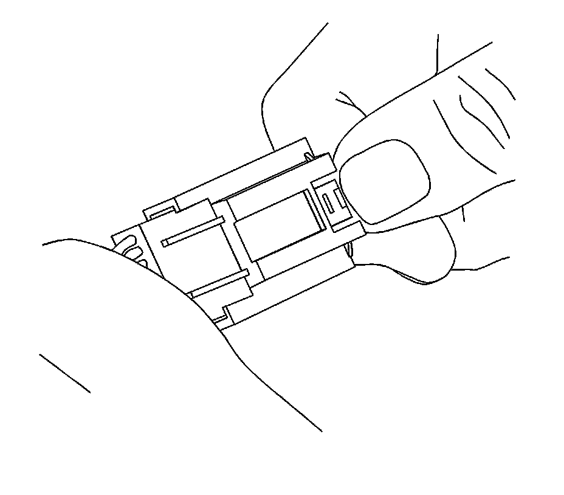
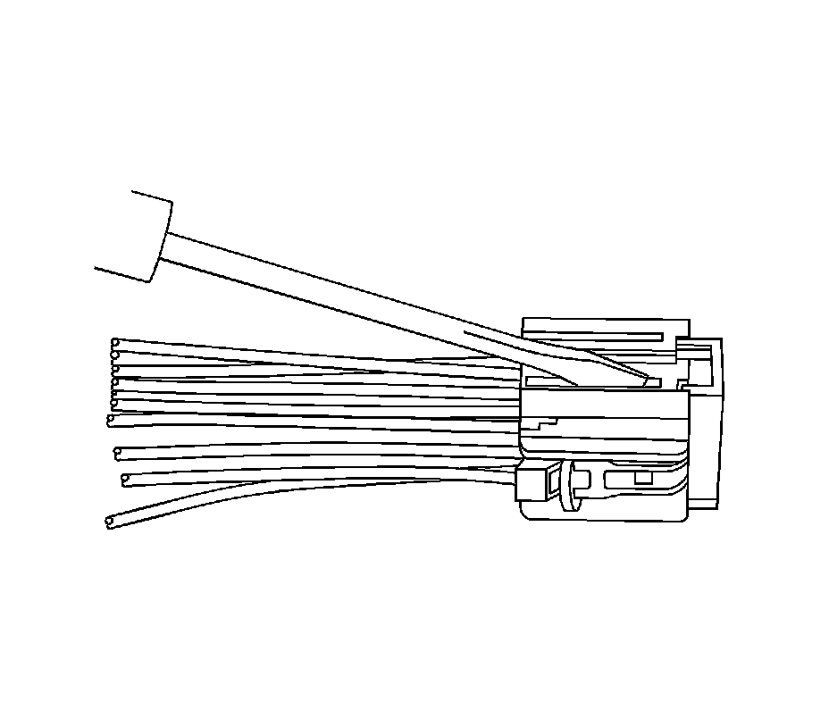
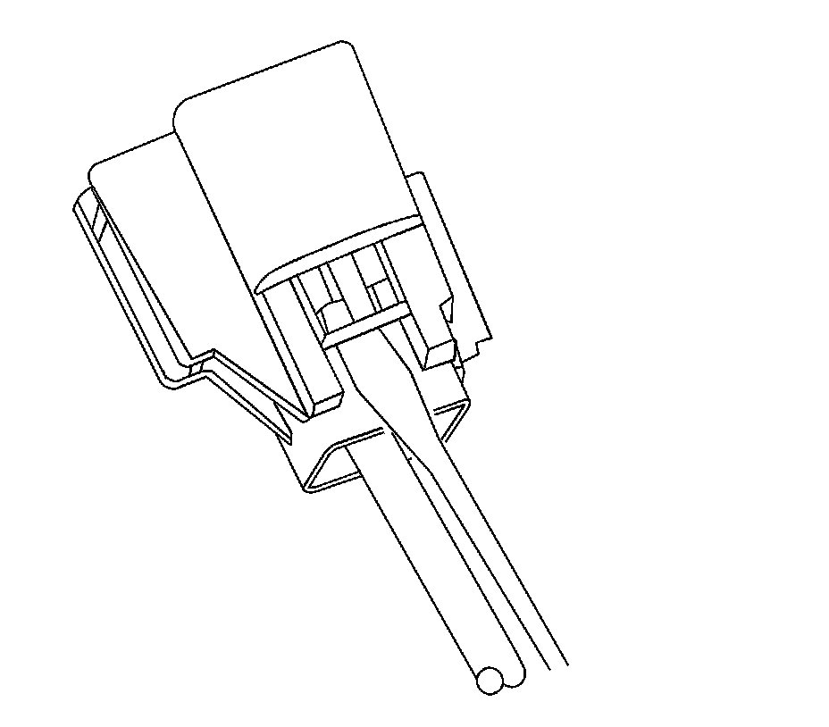
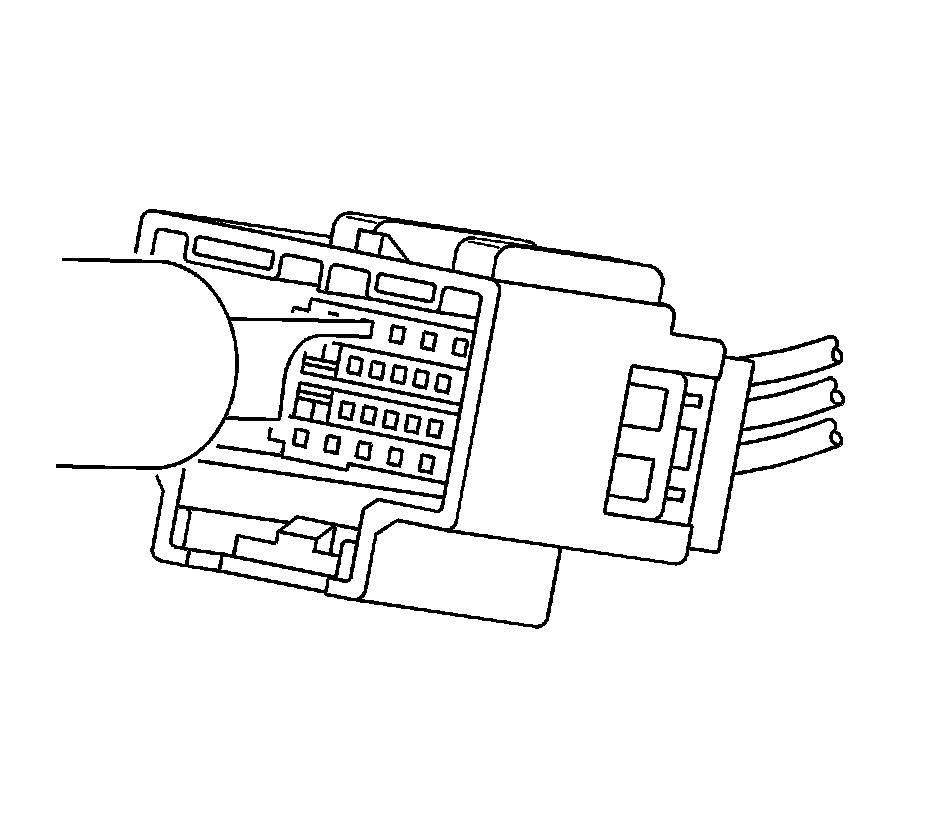
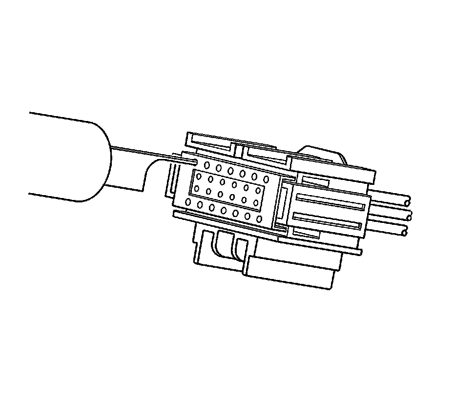

Yazaki Connectors (16-Way)
Yazaki Connectors (16-Way)
Tools Required
J-38125 Terminal Repair Kit
Removal Procedure
1. While depressing the lock, pull the two connector halves apart.

2. Use a small flat-blade tool to very carefully push the terminal position assurance (TPA) towards the face of the connector on both sides of the connector.
Important: The TPA is fragile and may break if not done carefully.

View of the male half of the connector with female terminals.

View of the female half of the connector with male terminals.
3. Use the J 38125-215 tool to release the terminals by inserting the tool into the terminal release cavity. See the release tool cross reference in the Reference Guide of the J-38125 to ensure that the correct release tool is used.

View of the female half of the connector with male terminals.

View of the male half of the connector with female terminals.
4. While holding the removal tool in place, gently pull the wire out of the back of the connector. Always remember never use force when pulling a terminal out of a connector.
Repair Procedure
Use the appropriate terminal and follow the instructions in the J-38125 .
Location of the terminal in the repair tray and the proper crimp tool can be found in the appropriate connector end view.